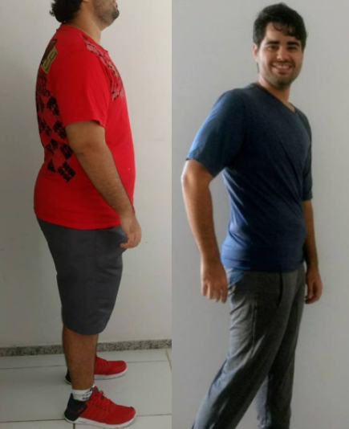

Olá a todos, me chamo Eloyna Raiany e estou aqui a disposição para trabalhar visando o melhor na saúde de cada um de vocês!
Sou nutricionista com especializações em Nutrição Clínica e Esportiva e Pós Graduanda em Vigilância Sanitária e Qualidade dos Alimentos.
Resultados

Giuliano Guerra
Aqui podemos observar uma evolução maravilhosa... Peso inicial: 129 kg,
Peso atual: 85,6 kg,
Eliminados: - 43,4 kg em 9 meses.
Então aqui vai uma motivação para você ⛔LEMBRANDO: NENHUMA INTERVENÇÃO CIRÚRGICA, sem termogênicos, nenhum gel redutor, zero shake e muito menos MILAGRE. Apenas com reeducação alimentar e atividade física.